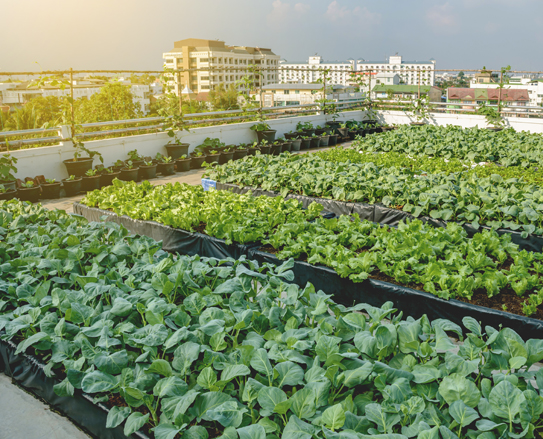

Growing a Greener Future 🌱
Empowering communities through urban farming and sustainability.
Become a VolunteerWho We Are
GreenRoots is an urban farming initiative focused on improving food security and environmental awareness in local communities. Since 2018, we have helped transform unused spaces into thriving gardens.
Our Impact

Get Involved
Join our workshops, volunteer programs, and community initiatives.
View Services